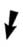

|
The 1st section is entrusted to cleric Al-Qummus
Basiliyus Abd el Masih
It is sent to Egyptian historian Raghib, who
stores it in the Coptic Museum in Cairo. It is studied by Jean
Doresse, French Egyptologist and Toga Mina,
Director of the Coptic
Museum of Cairo
|
|
|
|
The 2nd section falls
into the hands of an outlaw from the village of Samman, Bahij
Ali, who sells it to Phocion Tano,
another Cairo antique dealer.
The government tries to repurchase it from Phocion
Tano.
In the meantime, the latter has sold:

one of the codices
(#14) to Alfredo
Malardi.
A short time later, the police conclude he’s committed suicide after
finding his body in a transalpine lake.
Thomas A. Malko has the time to buy it back
before himself disappearing for unknown reasons.
It was quite by chance that Peter Volker picks up
the trail of the orphan codex, which ultimately costs him his life.
|
the other codices to Miss Dattari, an Italian
collector residing in the Egyptian capital.
The
Dattari collection becomes the property of the Coptic
Museum of Cairo in 1952.
|
|
|
|
|
The 3rd section is sold
on the black market and repurchased in Cairo by antique dealer Albert
Eid. He smuggles it illegally out of Egypt. Failing to sell it
in the United States, he keeps it in a safe-deposit box in Belgium.
Upon his death, his wife tries to sell it.
Professor
Gilles Quispel acquires it through an
intermediary from the Jung Foundation in Zurich.
|
|